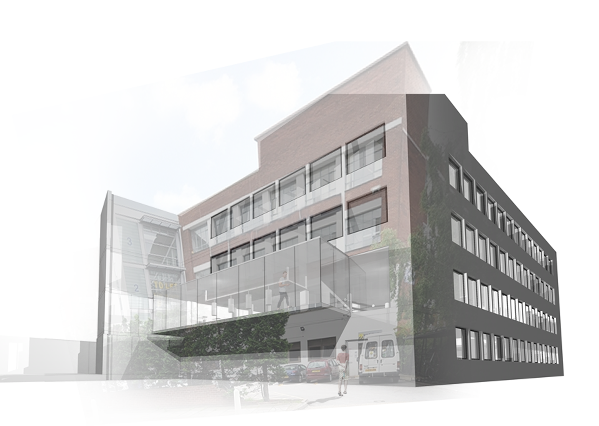
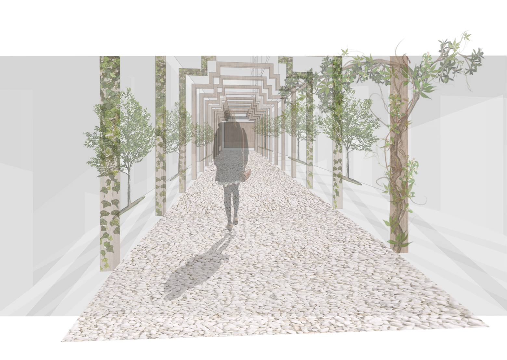

Harringay has one of the highest percentages of domestic violence attacks, of all contacts to “Children and Young People Services” in Haringey, 70-80% involve domestic abuse, due to lack of communication and fear most crimes go unsolved, leaving the victims venerable. The safe house is a project designed for young adults ranging from 16-21, who have experienced some form of domestic violence, or abuse and are in need of a safe space to stay. The safe house provides rehabilitation for youth, a gym, an indoor garden and a place for them to sleep and have their own space. The project consists of a therapy area which is an indoor garden, a gym area including boxing and yoga, a study area with a library and separate sleeping area.
The safe house project will give young adults a chance to develop in a healthy environment, mentally and physically but also learn many new skills such as using the outside space to allow them to garden or grow fruit and vegetable. Develop communication skills by having therapy and help available to them. The sports area will allow them to take part in new activities and help them learn how to master their mind. Finally, the study area will allow them to progress and complete their studies to the best of their ability.
The image above is an exterior visual of the building.
The image above is a visual showing the entrance into the indoor garden.
The image above is a visual showing the main entrance of the building, by creating a long entrance it allows the victim to disconnect with the outside world as the enter the sanctuary.
The image above is a visual showing the personal hubs for the victims to disconnect from anything and focus on the central tree or just relax inside.
The image above is a detailed drawing of the personal hubs which shows a hub that has been exploded showing all the separate elements to it.
The axonometric displays all floors with the interior furnishings as well as materiality. The ground floor is an indoor garden with a main tree extending throughout the building. The first floor is sports area which accommodates for boxing, yoga, an indoor gym and a kitchen. The second floor is a study area with a library to allow the victims to catch up on work and stay on top of schoolwork. The final floor is a sleeping area where each young adult has their own sleeping pod/room. In the centre of the building there is a tree running through all floors with pods against the railing.